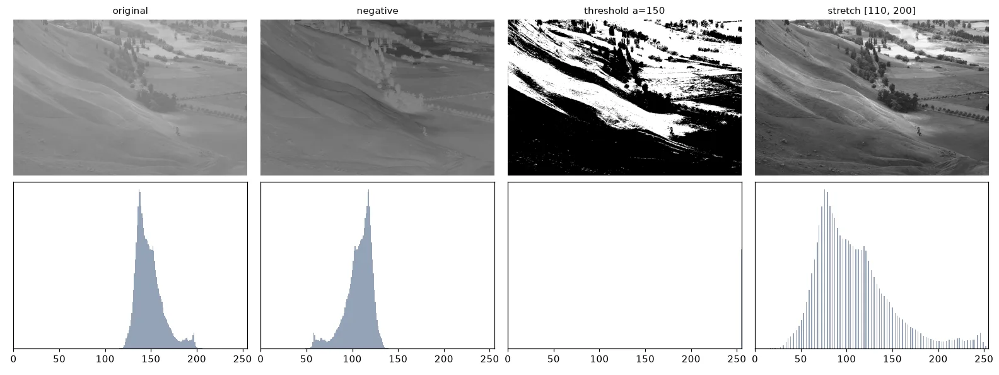
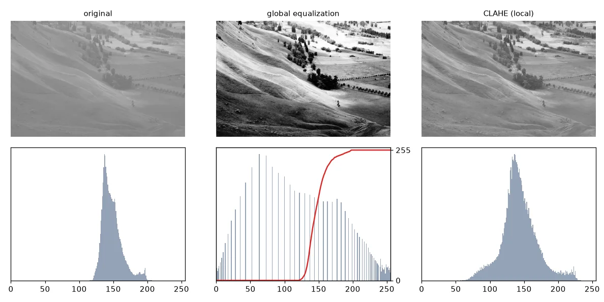
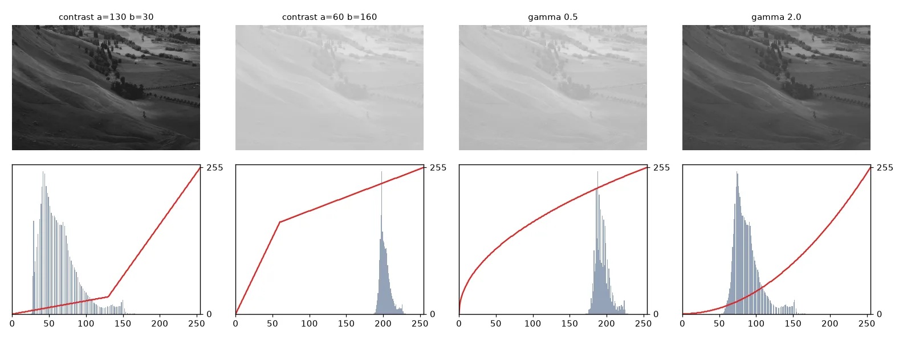
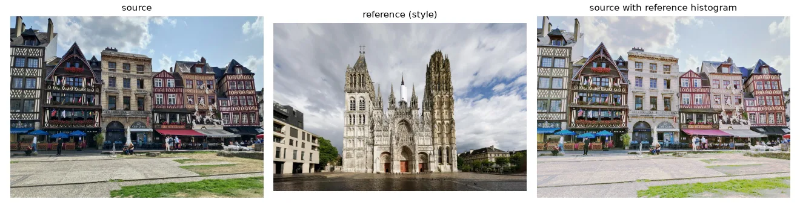

Look before you process#
The test image of this lesson is a hazy landscape whose pixels all sit between about 120 and 200. Before anything else, show it without letting Matplotlib cheat:
# plt.imshow(img, cmap="gray") # stretches min..max to black..white!
# plt.imshow(img, cmap="gray", vmin=0, vmax=255) # shows the real values
By default imshow maps the image's own min and max to black and white — a free, invisible contrast stretch. The course helper always passes vmin=0, vmax=255, so what you see is what is in the array.
def histogram(img):
return np.bincount(img.ravel(), minlength=256)
def cumulative_histogram(img):
return np.cumsum(histogram(img))
Point operations#
A point operation computes each output pixel from the input pixel at the same place only: \(g(x, y) = t(f(x, y))\). The function \(t\) is a curve from \([0, 255]\) to \([0, 255]\), drawn in red below.
- Negative: \(t(f) = 255 - f\).
- Threshold (binarisation): \(t(f) = 0\) if \(f < a\), else \(255\).
- Intensity window: keep \(f\) if \(a \le f \le b\), else \(0\).
- Dynamic expansion (contrast stretch): map \([a, b]\) linearly onto \([0, 255]\) and clip the rest, \(t(f) = 255 \frac{f - a}{b - a}\).
- Sigmoid contrast: \(t(f) = 255 / (1 + e^{-k(f - r_0)})\), a smooth version of the stretch centred on \(r_0\).
def negative(img):
return 255 - img
def brightness(img, delta):
return cv2.add(img, delta) # saturates instead of wrapping
def threshold(img, a):
return np.where(img < a, 0, 255).astype(np.uint8)
def intensity_window(img, a, b):
return np.where((img >= a) & (img <= b), img, 0).astype(np.uint8)
def stretch(img, a, b):
"""Dynamic expansion: map [a, b] to [0, 255] and clip the rest."""
out = 255.0 * (img.astype(np.float32) - a) / (b - a)
return np.clip(out, 0, 255).astype(np.uint8)
def sigmoid_contrast(img, k=0.1, r0=128):
"""Smooth contrast stretch centred on r0 (from the UFRN lectures)."""
return (255 / (1 + np.exp(-k * (img.astype(np.float32) - r0)))).astype(np.uint8)

Histogram equalisation#
Choosing \(a\) and \(b\) by hand is tedious. Equalisation picks the curve automatically so that the output histogram is as flat as possible — every gray level used about equally, which maximises the information (entropy) of the image. The curve is the normalised cumulative histogram:
where \(N\) is the number of pixels and \(L = 256\). Intuition: a level that many pixels share gets a big step, so crowded ranges are pulled apart.
def equalize(img):
"""t(f) = (L - 1) / N * sum_{i<=f} h(i)"""
cdf = cumulative_histogram(img)
lut = np.round(255 * cdf / img.size).astype(np.uint8)
return lut[img] # apply the LUT with fancy indexing
Our version is identical to cv2.equalizeHist (maximum difference: 0).
Global equalisation can over-amplify noise and wash out regions that were already fine. CLAHE (Contrast Limited Adaptive Histogram Equalisation) equalises small tiles separately and limits how steep the curve may get:
clahe = cv2.createCLAHE(clipLimit=2.0, tileGridSize=(8, 8))
eq_local = clahe.apply(img)

Look-up tables#
All these transforms share a property: every pixel with value \(f\) becomes \(t(f)\), wherever it is. So instead of computing \(t\) millions of times, compute it 256 times into a table, then index:
def lut_threshold(a):
return np.where(np.arange(256) < a, 0, 255).astype(np.uint8)
def lut_stretch(a, b):
x = np.arange(256, dtype=np.float32)
return np.clip(255 * (x - a) / (b - a), 0, 255).astype(np.uint8)
def lut_contrast(a, b):
"""Piece-wise linear: slope b/a below a, then a line to (255, 255)."""
x = np.arange(256, dtype=np.float32)
low = x * b / a
high = ((255 - b) * x + 255 * (b - a)) / (255 - a)
return np.clip(np.where(x <= a, low, high), 0, 255).astype(np.uint8)
def lut_gamma(gamma):
x = np.arange(256) / 255.0
return np.round(255 * x ** gamma).astype(np.uint8)
def apply_lut(img, lut):
return lut[img] # or cv2.LUT(img, lut)
# Composing transforms = composing LUTs: still one pass over the image.
combined = lut_threshold(128)[lut_stretch(110, 200)]
lut[img] is NumPy fancy indexing: for every pixel, read the table at that pixel's value. cv2.LUT(img, lut) does the same, faster. Composing two transforms is composing two tables — lut2[lut1] — and the image is still traversed only once.
A piece-wise linear contrast curve with parameters \((a, b)\) is: slope \(b/a\) on \([0, a]\), then a straight line to \((255, 255)\). With \(a > b\) the dark tones are compressed and the bright ones expanded; with \(a < b\) the reverse. A gamma curve \(t(f) = 255\,(f/255)^\gamma\) brightens (\(\gamma < 1\)) or darkens (\(\gamma > 1\)) the mid-tones while keeping black and white fixed.

Histogram matching: transfer a "look"#
Equalisation makes the histogram flat. Matching makes it look like the histogram of another image. For each source level \(f\), find the reference level \(g\) with the same cumulative frequency, \(C_\text{ref}(g) = C_\text{src}(f)\) — that is, \(t = C_\text{ref}^{-1} \circ C_\text{src}\). It is still a LUT, one per colour channel.
def cdf(channel):
c = np.cumsum(np.bincount(channel.ravel(), minlength=256)).astype(np.float64)
return c / c[-1]
def match_lut(source, reference):
"""For each source level, the reference level with the same cumulative frequency."""
return np.clip(np.round(np.interp(cdf(source), cdf(reference), np.arange(256))), 0, 255).astype(np.uint8)
def match_histograms(source, reference):
out = np.empty_like(source)
for c in range(3): # B, G and R independently
out[..., c] = match_lut(source[..., c], reference[..., c])[source[..., c]]
return out

Exercises#
- Build the LUT "equalise, then threshold at 128" in one table and check it against applying both operations in sequence.
- Plot
cumulative_histogramof the equalised image. Why is it (almost) a straight line? - Implement
stretch_auto(img, p)that sets \(a\) and \(b\) to the \(p\)-th and \((100-p)\)-th percentiles of the image. Why is it more robust than using the min and max?